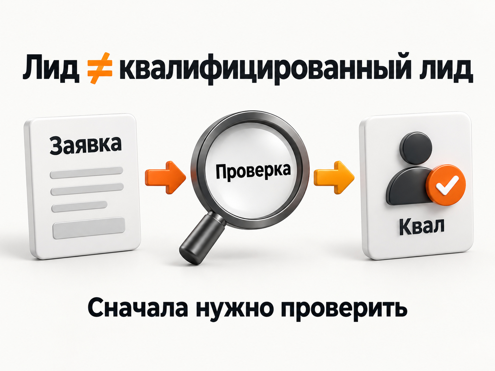
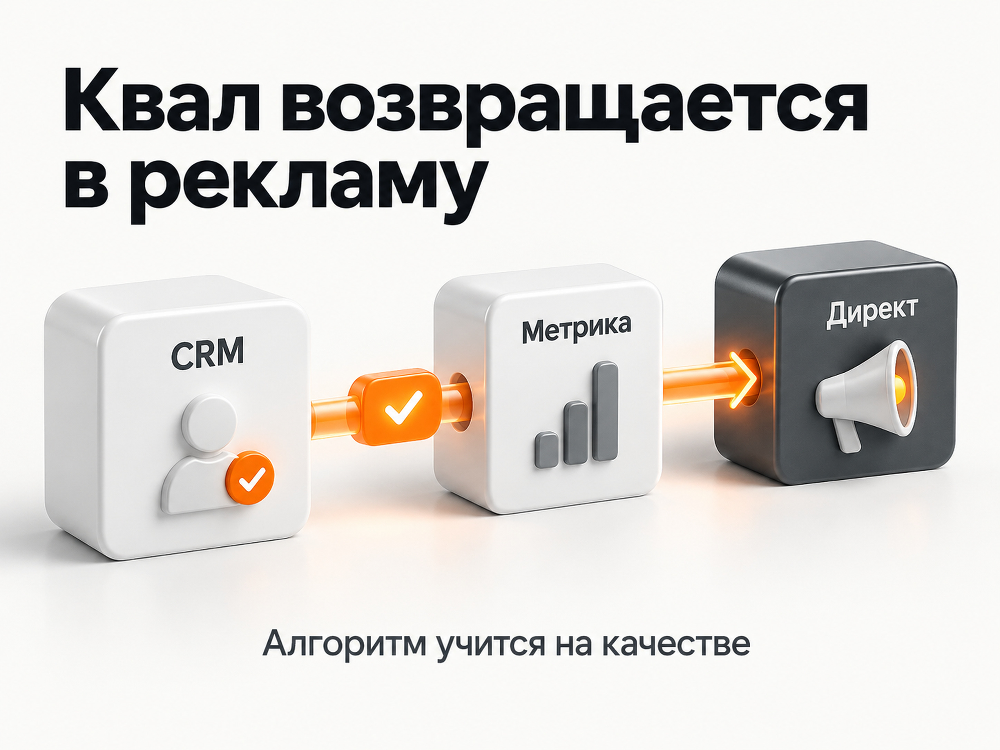
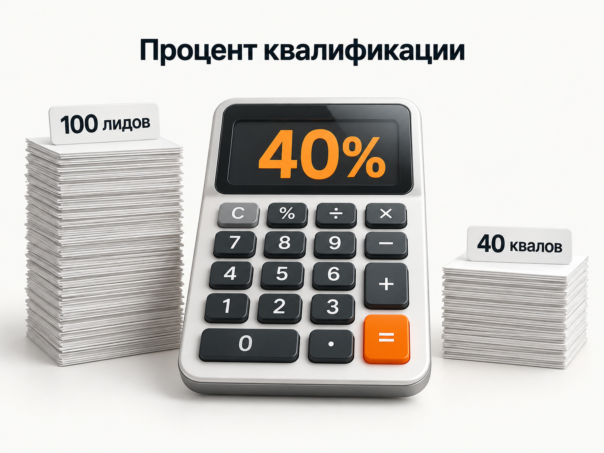

Блог о платном трафике
Квалификация лидов в продажах: что это и как считать
Квалификация лидов помогает отличить обычную заявку от обращения человека, который действительно подходит бизнесу.
Квалификация лидов - это проверка заявок, после которой бизнес понимает, действительно ли перед ним потенциальный клиент.
Человек может заполнить форму на сайте или позвонить, но это еще не означает, что он готов покупать. Он мог ошибиться номером, искать другую услугу, не подходить по региону или бюджету, просто узнавать цену или вообще отправить заявку случайно.
После общения с менеджером становится понятно, есть ли у такого обращения реальный потенциал. Если человек подходит под заранее определенные критерии бизнеса, заявку можно считать квалифицированным лидом.
Яндекс использует похожую логику: квалифицированным считается звонок или заявка от человека, который подтвердил заинтересованность в товаре или услуге. При этом Директ позволяет передавать в Метрику именно проверенные отделом продаж обращения.
Что такое квалифицированный лид простыми словами

Представим стоматологию.
Четыре человека оставили заявку на имплантацию:
- Первый действительно хочет установить имплант и записывается на консультацию.
- Второй находится в другом городе, с которым клиника не работает.
- Третий хотел узнать стоимость лечения, но ему нужна другая услуга.
- Четвертый оставил чужой номер телефона.
Формально сайт получил четыре заявки. В Яндекс Метрике тоже могут быть зарегистрированы четыре достижения цели «Отправка формы».
Но реальный потенциальный клиент здесь только один.
Получается:
4 заявки -> 1 квалифицированный лид.
Именно поэтому количество заявок само по себе еще ничего не говорит об эффективности маркетинга.
Подробнее - в статье «Некачественные лиды из Яндекс Директа: почему идут нецелевые заявки».
Кто определяет, квалифицирован лид или нет
Обычно это делает менеджер отдела продаж после первого нормального контакта с человеком.
Для этого у бизнеса должны быть заранее определены критерии. Нельзя работать по принципу: одному менеджеру клиент кажется хорошим, другому плохим.
Например, для компании по строительству домов квалифицированным может считаться человек, который:
- хочет построить именно тот тип дома, которым занимается компания;
- находится в нужном регионе;
- имеет подходящий бюджет;
- реально рассматривает строительство;
- готов обсуждать проект с менеджером.
Для оптового производителя критерии будут другими:
- клиенту нужен опт, а не одна единица товара;
- подходит минимальный объем заказа;
- компания работает с его регионом;
- есть реальная потребность в продукции;
- человек участвует в принятии решения или может связать менеджера с тем, кто его принимает.
Не обязательно использовать сложные зарубежные методики вроде BANT, MEDDIC или десятки параметров скоринга. Для большинства небольших компаний достаточно определить 3-5 признаков хорошей заявки и одинаково применять их ко всем обращениям.
Квалифицированный лид и продажа - это разные вещи
Квалифицированный лид еще не является клиентом.
Обычная воронка выглядит примерно так:
Заявка -> Квалифицированный лид -> Переговоры -> Сделка -> Оплата
Например, человек действительно хочет купить оборудование, подходит по бюджету и объему заказа. Это квалифицированный лид.
Но затем он может выбрать другого поставщика. Квалификация была правильной, хотя продажи не произошло.
Поэтому полезно отдельно считать:
- все обращения;
- квалифицированные лиды;
- продажи.
Так становится понятно, где именно находится проблема.
Если приходит много заявок, но почти нет квалифицированных лидов - чаще нужно разбираться с рекламой, сайтом, оффером или источником трафика.
Если квалифицированных лидов много, но почти никто не покупает - проблема может находиться уже дальше по воронке: в цене, продукте, работе менеджеров или условиях сделки.
Как считать процент квалифицированных лидов
Формула простая:
Процент квалификации = Количество квалифицированных лидов / Все полученные лиды × 100%
Например, за месяц компания получила 100 заявок.
После обработки менеджерами:
- 40 человек признаны квалифицированными;
- 60 не прошли квалификацию.
Получаем:
40 / 100 × 100% = 40%
Значит, доля квалифицированных лидов составляет 40%.
Я бы дополнительно отдельно фиксировал причины неквалификации:
- не тот регион;
- недостаточный бюджет;
- нужна другая услуга;
- розничный клиент вместо оптового;
- спам;
- дубль;
- ошибочный номер;
- невозможно связаться;
- другая объективная причина.
Это намного полезнее одного общего статуса «некачественный лид».
Какой процент квалифицированных лидов считается нормальным
Универсальной нормы нет.
Нельзя сказать, что 30% квалифицированных заявок всегда плохо, а 70% всегда хорошо.
Все зависит от бизнеса, источника трафика и стоимости привлечения.
Например, одна рекламная кампания может давать:
100 заявок по 500 рублей -> 30 квалифицированных лидов.
Вторая:
100 заявок по 1 000 рублей -> 70 квалифицированных лидов.
Во второй кампании процент квалификации намного выше, но для бизнеса важен еще и конечный результат.
Поэтому удобнее считать стоимость квалифицированного лида:
Стоимость квалифицированного лида = Расходы на рекламу / Количество квалифицированных лидов
Если первая кампания потратила 50 000 рублей и принесла 30 качественных обращений:
50 000 / 30 = 1 667 рублей за квалифицированный лид.
Вторая потратила 100 000 рублей и принесла 70:
100 000 / 70 = 1 429 рублей.
Теперь уже видно, что вторая реклама, несмотря на более дорогую обычную заявку, приносит нужных бизнесу людей дешевле.
Подробнее - в статье «Какая конверсия рекламы считается хорошей».
Как определить необходимый процент квалификации именно для своего бизнеса
Можно пойти от обратного.
Допустим:
- обычная заявка из рекламы стоит 1 000 рублей;
- бизнес готов платить максимум 2 500 рублей за квалифицированного лида.
Тогда минимально необходимая доля квалификации:
1 000 / 2 500 × 100% = 40%
Если фактически квалификацию проходит 55% заявок - результат укладывается в экономику.
Если только 20% - стоимость качественного обращения получится около 5 000 рублей, что в два раза выше допустимого значения.
Поэтому вопрос лучше формулировать не «какой процент считается хорошим», а «какой процент нужен, чтобы стоимость квалифицированного лида укладывалась в экономику бизнеса».
Как организовать квалификацию в CRM
CRM - это система, в которой компания хранит заявки и ведет работу с потенциальными клиентами.
Самый простой вариант - добавить понятные статусы:
Новая заявка -> Квалифицирован -> Не квалифицирован -> Сделка -> Продажа
Для неквалифицированных заявок желательно дополнительно сохранять причину отказа.
Например:
Не квалифицирован -> Бюджет
или:
Не квалифицирован -> Не наш регион
Тогда через месяц можно увидеть не только процент хороших обращений, но и понять, почему остальные оказались плохими.
Это особенно полезно для рекламы.
Если половина неквалифицированных лидов хочет услугу, которой компания вообще не занимается, нужно искать причину в рекламных запросах, объявлениях или посадочной странице.
Если большинство обращений подходит бизнесу, но менеджеры не могут связаться с людьми, проблема уже другая.
CRM превращает субъективное ощущение «что-то заявки плохие» в нормальную статистику.
Почему квалифицированные лиды особенно важны в Яндекс Директе
Здесь появляется второй смысл квалификации, который часто упускают.
Допустим, Яндекс Директ привел 100 заявок.
Для алгоритма все они могут выглядеть одинаково, если единственная цель кампании - отправка формы.
Но после обработки выяснилось:
- 40 обращений оказались мусором или нецелевыми;
- 40 не подошли бизнесу;
- 20 стали нормальными потенциальными клиентами.
Если Директ получает информацию только о первоначальных 100 формах, стратегия обучается искать пользователей, похожих на всех людей, которые отправили заявку.
В том числе на тех, кто бизнесу совершенно не нужен.
Если вернуть в систему информацию о 20 квалифицированных лидах, алгоритм получает значительно более полезный сигнал.
Яндекс прямо рекомендует передавать проверенные отделом продаж звонки и заявки в Метрику и использовать такие конверсии для оптимизации продвижения.
Подробнее - в статье «Сквозная аналитика Яндекс Директ: как связать рекламу с заявками и продажами».

Как передать квалифицированные лиды в Яндекс Метрику
Логика выглядит так:
Яндекс Директ -> Заявка -> CRM -> Проверка менеджером -> Квалифицированный лид -> Яндекс Метрика -> Яндекс Директ
Передавать данные можно несколькими способами.
Интеграция CRM
Если CRM поддерживает интеграцию с Яндекс Метрикой, данные можно передавать автоматически.
Менеджер меняет статус заявки, а соответствующее событие попадает в аналитику.
Яндекс поддерживает передачу CRM-данных с использованием ClientID, телефона или электронной почты для сопоставления клиента с его визитом на сайт. Чем больше корректных идентификаторов передается, тем выше вероятность связать сделку с нужным визитом.
API
Для собственной CRM или более сложной системы можно настроить автоматическую передачу через API Метрики.
Это удобный вариант, когда квалифицированных лидов много и статусы постоянно меняются.
Ручная загрузка офлайн-конверсий
Если автоматической интеграции пока нет, данные можно выгружать из CRM и загружать как офлайн-конверсии.
Для этого Яндекс позволяет использовать Центр конверсий и загрузку данных из файлов и других источников. Загруженные события попадают в Метрику и могут использоваться как цели для статистики и оптимизации.
Для постоянной работы автоматическая передача предпочтительнее. Яндекс рекомендует отправлять информацию регулярно, по мере ее обновления.
Как оптимизировать Яндекс Директ по квалифицированным лидам
После передачи данных квалифицированный лид появляется в Метрике как отдельная цель.
Дальше ее можно использовать в Яндекс Директе как целевое действие для автоматической стратегии.
Получается принципиально другая задача.
Было:
Найди людей, которые отправят форму.
Стало:
Найди людей, которые после отправки формы проходят квалификацию отдела продаж.
Автоматические стратегии Директа используют цели Метрики для управления рекламой и стараются получать больше выбранных целевых действий.
Но для обучения нужен достаточный объем данных.
Сейчас Яндекс указывает минимум около 10 конверсий в неделю для стратегии «Максимум конверсий», а в рекомендациях по эффективности советует обеспечивать бюджет примерно на 10-20 конверсий за неделю.
На практике я предпочитаю ориентироваться примерно на 15-20 квалифицированных лидов в неделю в рамках одной рекламной кампании.
Если кампания стабильно получает такой объем, уже имеет смысл рассматривать квалифицированный лид как основную цель оптимизации.
Если получается 2-3 таких события в неделю, данных для полноценного обучения по этой цели мало. В таком случае квалификацию все равно нужно передавать и анализировать, но для стратегии может потребоваться более частое действие выше по воронке.
Подробнее - в статье «Какую стратегию выбрать в Яндекс Директ: конверсии, клики или ручные ставки».

Почему нельзя оценивать рекламу только по стоимости заявки
Это одна из самых частых ошибок.
Представим две кампании.
| Показатель | Кампания 1 | Кампания 2 |
|---|---|---|
| Расход | 100 000 ₽ | 100 000 ₽ |
| Заявки | 100 | 50 |
| Цена заявки | 1 000 ₽ | 2 000 ₽ |
| Квалифицированные лиды | 10 | 25 |
| Цена квалифицированного лида | 10 000 ₽ | 4 000 ₽ |
Если смотреть только на CPL, первая кампания кажется в два раза лучше.
Если посмотреть на качество обращений, вывод полностью меняется.
Поэтому в проектах с нормальной CRM я бы строил оценку рекламы по цепочке:
Расход -> Заявка -> Квалифицированный лид -> Продажа
Чем дальше получается связать рекламную статистику с реальным результатом бизнеса, тем меньше вероятность оптимизировать рекламу на красивую, но бесполезную цифру.
Подробнее - в статье «Конверсия в Яндекс Директ: что это и как ее считать».
Что делать, если процент квалифицированных лидов низкий
Сначала нужно посмотреть причины неквалификации.
Если много людей ищут другую услугу - проверить поисковые запросы и объявления.
Если не подходит география - проверить геотаргетинг и содержание сайта.
Если регулярно приходят люди с неподходящим бюджетом - возможно, реклама или посадочная страница формируют неправильные ожидания по цене.
Если много спама и случайных заявок - это уже отдельная проблема качества трафика и защиты форм.
Если заявки подходят по всем объективным параметрам, но менеджеры массово ставят им статус «не квалифицирован», нужно проверять сами правила квалификации и работу отдела продаж.
Не нужно пытаться исправлять все проблемы изменением настроек Яндекс Директа. Сначала необходимо определить конкретную причину.
Главное о квалификации лидов
Квалификация лидов нужна, чтобы отделить обычную заявку от человека, который действительно подходит бизнесу.
Для этого достаточно:
- Определить конкретные критерии хорошего обращения.
- Фиксировать результат обработки каждой заявки в CRM.
- Считать долю и стоимость квалифицированных лидов.
- Отдельно сохранять причины неквалификации.
- Передавать качественные обращения обратно в Яндекс Метрику.
- При достаточном объеме использовать эту цель для оптимизации Яндекс Директа.
Тогда реклама оценивается уже не по количеству заполненных форм, а по тому, сколько реальных потенциальных клиентов она приводит.